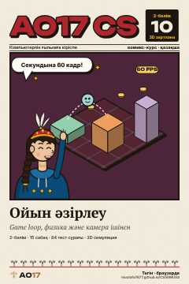

AO17 CS курсы / 2-бөлім: 3D зертхана / Ойын әзірлеу

Ойын әзірлеу · 12-сабақ · ≈20 мин · 2 қадам · 6 сұрақ
Соқтығысу: тормен кең фаза
Collision: Broad Phase with a Grid
1000 дене: жарты миллион жұп. Кеңістіктік тор тексерістерді жүздеген есе азайтады.
Кино-түсіндіру: сабақтың өзегі бір минуттық мультфильмде. Мәтіні төменде.
Фильмнің мәтіні (сабақтың қадамдарынан құрастырылған)
- Сұрақ. 200 дене бар, әр жұпты соқтығысқа тексереміз. Денелер 5 есе көбейіп 1000 болса, тексерістер саны неше есе өседі?
- Бейне. Соқтығысты табу екі кезеңнен тұрады: 1. Broad phase (кең кезең): «қай жұптар соқтығысуы мүмкін?» деген арзан сүзгі. 2. Narrow phase (тар кезең): тек сол жұптар үшін нақты, қымбат геометриялық тексеріс.
- Болжа. 200 дене бар, әр жұпты соқтығысқа тексереміз. Денелер 5 есе көбейіп 1000 болса, тексерістер саны неше есе өседі? Жауап: Шамамен 25 есе. Жұптар саны n(n − 1)/2. 200 денеде 19 900, 1000 денеде 499 500: шамамен 25 есе. Квадраттық өсу.
- Көр. 1-қадам, «Әр жұпты тексеру». Соқтығысты табу екі кезеңнен тұрады: 1. Broad phase (кең кезең): «қай жұптар соқтығысуы мүмкін?» деген арзан сүзгі. 2. Narrow phase (тар кезең): тек сол жұптар үшін нақты, қымбат геометриялық тексеріс.
- Көр. 2-қадам, «Кеңістіктік тор». Біркелкі тор (uniform grid): әлемді бірдей ұяшықтарға бөл, әр денені өз ұяшығына сал. Соқтығысатын денелер міндетті түрде бір ұяшықта не көрші ұяшықтарда болады (ұяшық денеден үлкен болса).
- Көр. Нақты әлемде: Мультиплеер серверлері дәл осындай торды «кімге кімнің қозғалысын жіберу керек» деген сұраққа да қолданады (interest management).
- Түйін. 1000 дене: жарты миллион жұп. Кеңістіктік тор тексерістерді жүздеген есе азайтады.
- Түйін. Жиі қате: Тордағы денені неше ұяшықпен тексеру жеткілікті (2D, ұяшық ≥ дене диаметрі)? Жауап: «Тек өз ұяшығымен». Дұрысы: «Өз ұяшығы мен 8 көршісімен, барлығы 9». Дене ұяшықтың шетінде тұрса, көршісіндегі денемен соқтығысуы мүмкін. Одан әрі ұяшықтағы дене жете алмайды.
1Әр жұпты тексеру
Идея
Соқтығысты табу екі кезеңнен тұрады:
- Broad phase (кең кезең): «қай жұптар соқтығысуы мүмкін?» деген арзан сүзгі.
- Narrow phase (тар кезең): тек сол жұптар үшін нақты, қымбат геометриялық тексеріс.
Ең қарапайым broad phase: ештеңе сүзбеу, әр жұпты тексеру.
Есептеп көрейік
Жұптар саны: n(n − 1) / 2.
- 50 дене: 1 225.
- 200 дене: 19 900.
- 1000 дене: 499 500.
1000 денеде секундына 60 кадр: секундына 30 миллион тексеріс. Ал шын соқтығыстар саны (200 денеде) небәрі 30. Тексерістердің 99.8%-ы бекер.
Нақты әлемде
Бөлшектер жүйесі, оқтар, тобыр, физикалық конструктор: мыңдаған дене әдеттегі нәрсе. O(n²) алгоритм 100 денеде байқалмайды, 1000-да кадрларды жейді. Algorithms зертханасындағы Big-O дәл осы жерде ойынның FPS-іне айналады.
Енді сен
200 денемен, сосын 1000 денемен іске қос. Жұптар санының өсуіне қара.
3D симуляцияда орында
- 200 дене: барлық жұптарды сана
- 1000 дене: жұптар санының қалай өсетінін көр
Алдымен болжа
200 дене бар, әр жұпты соқтығысқа тексереміз. Денелер 5 есе көбейіп 1000 болса, тексерістер саны неше есе өседі?
Жауабы мен түсіндірмесі
Дұрыс жауап: Шамамен 25 есе
Жұптар саны n(n − 1)/2. 200 денеде 19 900, 1000 денеде 499 500: шамамен 25 есе. Квадраттық өсу.
Өзіңді тексер
n дене үшін барлық жұптар саны?
Жауабы мен түсіндірмесі
Дұрыс жауап: n(n − 1)/2
Әр дене қалған n − 1 денемен, әр жұп екі рет саналмайды.
Broad phase-тің міндеті?
Жауабы мен түсіндірмесі
Дұрыс жауап: Соқтығысуы мүмкін емес жұптарды арзан тәсілмен алып тастау
Қымбат тексеріс тек үміткер жұптарға қалуы үшін.
200 денеде 19 900 тексерістің неше пайызы шын соқтығыс тапты?
Жауабы мен түсіндірмесі
Дұрыс жауап: Шамамен 0.15% (30 жұп)
30 / 19 900 ≈ 0.0015. Қалғаны: бір-бірінен алыс денелер.
2Кеңістіктік тор
Идея
Біркелкі тор (uniform grid): әлемді бірдей ұяшықтарға бөл, әр денені өз ұяшығына сал. Соқтығысатын денелер міндетті түрде бір ұяшықта не көрші ұяшықтарда болады (ұяшық денеден үлкен болса). Сондықтан тек сол 9 ұяшықты тексеру жеткілікті.
Есептеп көрейік
200 дене, радиусы 1, әлем 100 × 100:
- Ұяшық 50: 19 900 тексеріс. Ештеңе үнемделмеді.
- Ұяшық 10: 1 643.
- Ұяшық 2: 84. Шамамен 240 есе аз. Табылған соқтығыстар саны сол: 30.
Ұяшық өлшемі
- Тым үлкен: әр ұяшықта көп дене, үнем аз.
- Тым кішкентай: дене бірнеше ұяшыққа жатады, бос ұяшықтарға жад кетеді.
- Ереже: ұяшық шамамен ең үлкен дененің диаметріндей.
Басқа құрылымдар
- Quadtree / octree: денелер біркелкі таралмаса, тығыз жерде ұсақ, бос жерде ірі бөледі.
- BVH және dynamic AABB tree: Box2D мен Bullet қолданады.
- Sweep and prune: денелерді бір осьте сұрыптап, қабаттасатындарын ғана тексереді.
Нақты әлемде
Мультиплеер серверлері дәл осындай торды «кімге кімнің қозғалысын жіберу керек» деген сұраққа да қолданады (interest management).
Енді сен
Ұяшық 50-ден бастап 10, сосын 2. Тексерістер мен соқтығыстарды салыстыр.
3D симуляцияда орында
- Ұяшық 50: тор ештеңе үнемдемейді
- Ұяшық 2: тексеріс 100 есе азайсын, ал соқтығыстар саны сол
Алдымен болжа
Әлемді ұяшықтарға бөлеміз де, денені тек өз ұяшығындағы және көрші ұяшықтардағы денелермен тексереміз. Ұяшық тым үлкен болса (әлемнің жартысы)?
Жауабы мен түсіндірмесі
Дұрыс жауап: Ештеңе үнемделмейді: бәрі көрші ұяшықта
100 × 100 әлемде 50-лік ұяшықта бар-жоғы 4 ұяшық, бәрі бір-біріне көрші. Модельде 19 900: әр жұпты тексеру сияқты.
Өзіңді тексер
Тордағы денені неше ұяшықпен тексеру жеткілікті (2D, ұяшық ≥ дене диаметрі)?
Жауабы мен түсіндірмесі
Дұрыс жауап: Өз ұяшығы мен 8 көршісімен, барлығы 9
Дене ұяшықтың шетінде тұрса, көршісіндегі денемен соқтығысуы мүмкін. Одан әрі ұяшықтағы дене жете алмайды.
Ұяшық өлшемін қалай таңдаған дұрыс?
Жауабы мен түсіндірмесі
Дұрыс жауап: Шамамен ең үлкен дененің диаметріндей
Тым үлкен ұяшық сүзбейді, тым кішкентайы денені көп ұяшыққа бөліп, жадты жейді.
Модельде ұяшық 2-де тексеріс 84, ал соқтығыстар?
Жауабы мен түсіндірмесі
Дұрыс жауап: Сол 30: тор тек бекер тексерістерді алып тастайды
Broad phase дұрыс болса, ол ешқандай шын соқтығысты жоғалтпайды. Тек жұмысты азайтады.
Сабақ AO17 командасының INSIDE TECH 3D платформасынан алынған: дәріс, тест және 3D симуляция - бір сабақтың бөліктері. Симуляция осы сайттың ішінде ашылады, прогресі «Менің шаңырағым» бетіне қосылады.